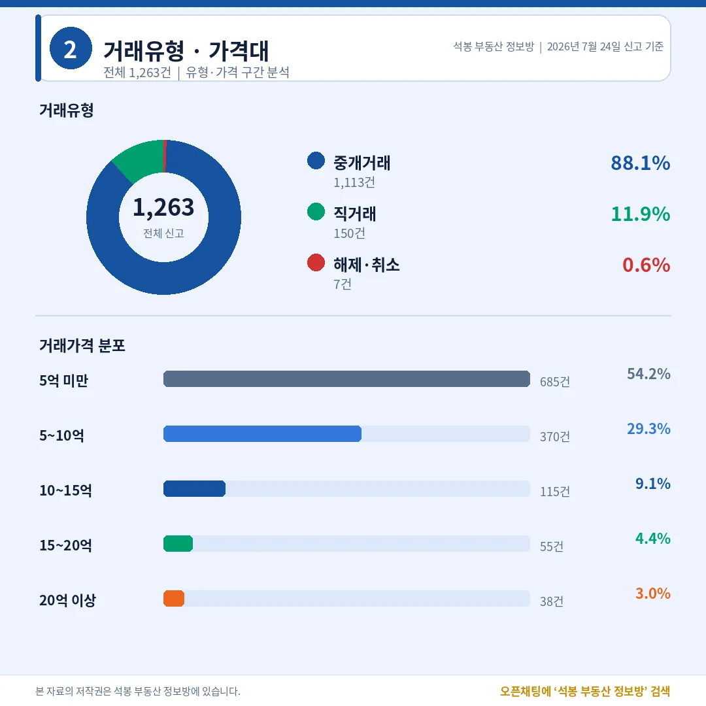
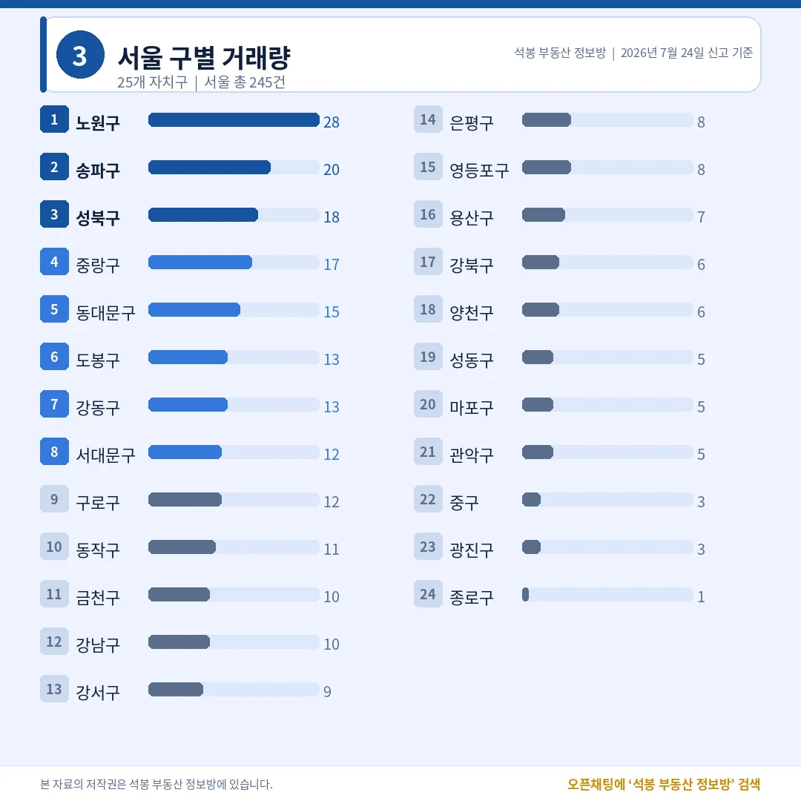
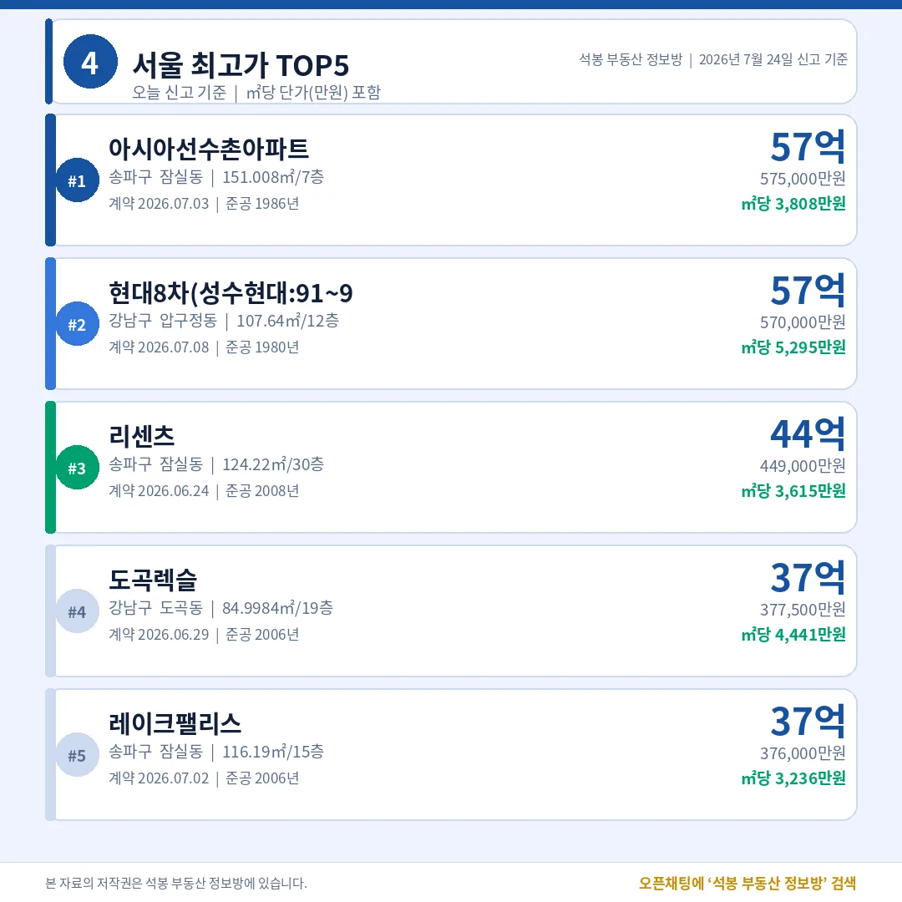
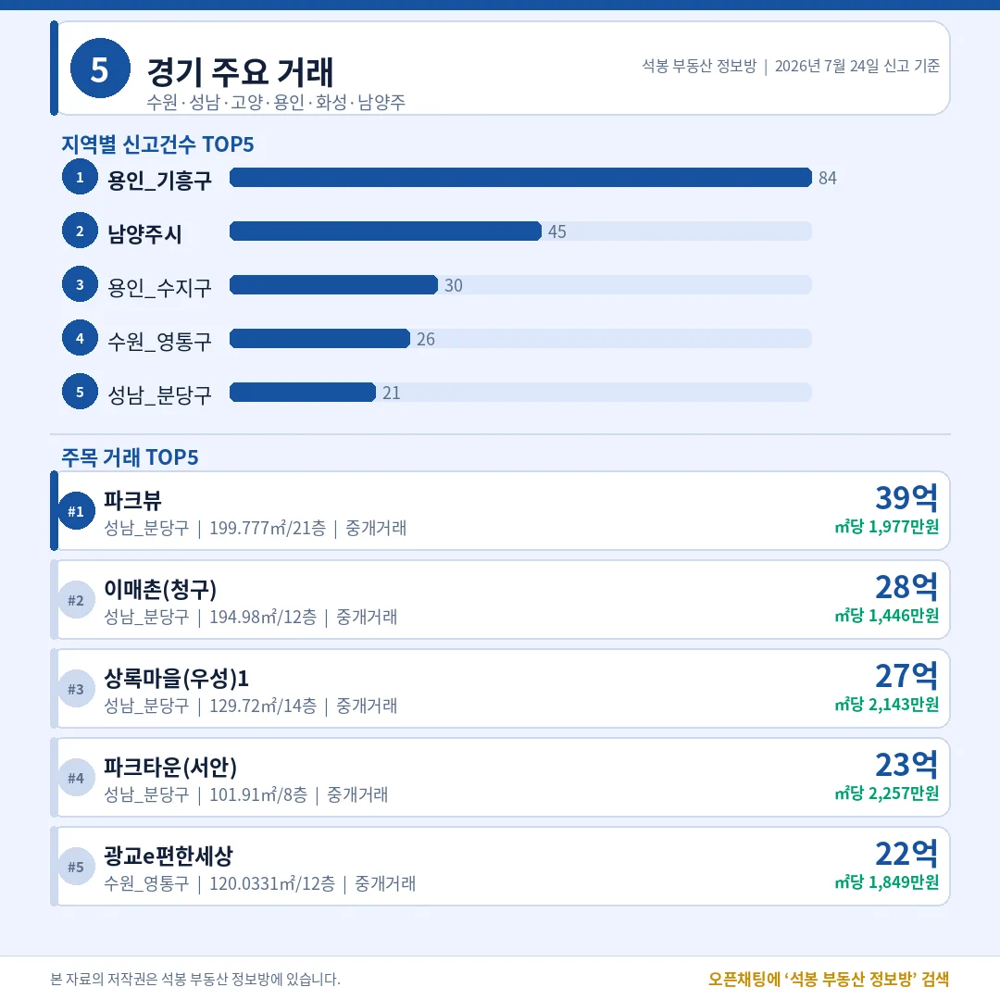
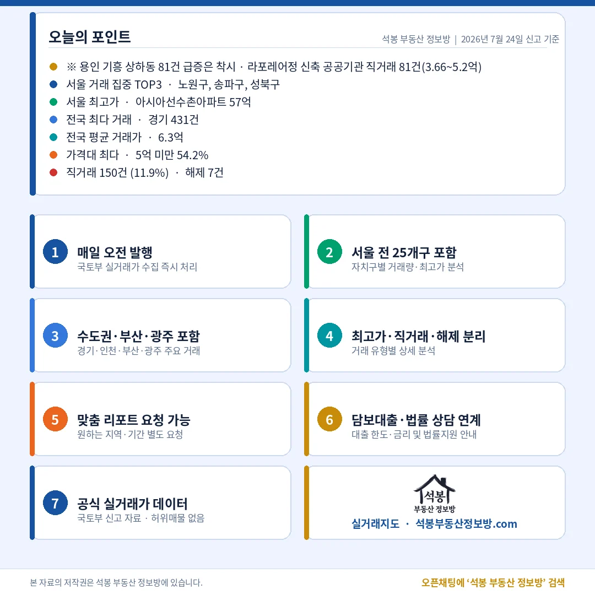

오늘 전국에서 아파트 1,263건이 실거래로 신고됐습니다. 서울 최고가는 송파 잠실동 아시아선수촌아파트 57.5억. 준공 40년 된 재건축 대상 단지가 서울 꼭대기에 올랐습니다. 그런데 오늘은 숫자를 액면 그대로 믿으면 곤란한 날입니다. 전국 최다로 잡힌 경기, 그중 용인 기흥이 84건으로 1위인데, 이 안에 공공기관이 한 번에 몰아 넣은 신고 81건이 섞여 있기 때문입니다.
오늘 시장 한눈에: 직거래 11.9%의 함정

거래유형·가격대
전체 1,263건 가운데 중개거래가 1,113건(88.1%), 직거래(중개사 없이 당사자끼리 한 거래)는 150건(11.9%), 해제·취소는 7건(0.6%)이었습니다. 직거래 비율이 평소(대개 5~7%)보다 눈에 띄게 높은데, 여기에 함정이 있습니다. 용인 기흥 상하동 라포레어정 신축 물량 81건을 공공기관이 직거래로 한꺼번에 신고했기 때문입니다. 이 81건을 걷어내면 직거래는 69건, 비율로는 5.9%(69건÷1,175건)로 평소 수준까지 내려앉습니다. 오늘 직거래가 늘어난 게 아니라, 한 단지의 일괄신고가 통계를 밀어 올린 셈입니다.
가격대를 보면 5억 미만이 685건(54.2%)으로 절반을 넘겼고, 5~10억이 370건(29.3%)으로 뒤를 이었습니다. 열 건 중 여덟 건 이상이 10억 아래에서 손바뀜했습니다. 10~15억은 115건(9.1%), 15~20억 55건(4.4%), 20억 이상은 38건(3.0%)이었고, 전국 평균 거래가는 6.3억이었습니다. 초고가 몇 건이 헤드라인을 채워도 시장의 몸통은 여전히 중저가에 있다는 사실이 숫자로 남습니다.
여기서부터는 회원에게 보여드립니다
카카오 로그인 3초면 전문을 읽을 수 있습니다. 무료입니다.
가입하시면 지역 시장조사 보고서(약식)를 2회 무료로 요청하실 수 있습니다.
이미 회원이면 같은 버튼으로 로그인만 됩니다
어디서 거래됐나: 노원 28건, 중저가 지역이 상위권

서울 구별 거래량
시도별로는 경기 431건이 전국 1위, 서울이 242건으로 뒤를 이었습니다. 다만 경기 431건에도 앞서 말한 용인 상하동 공공기관 81건이 들어 있어, 이를 빼면 실질은 350건 안팎입니다. 인천 89건, 부산 68건, 광주 60건 순이었고, 수도권(서울·경기·인천) 비중은 약 60%였습니다.
서울 구별 1위는 노원구 28건입니다. 송파구 20건, 성북구 18건, 중랑구 17건, 동대문구 15건으로 중저가·실수요 지역이 상위권을 채웠습니다. 반면 강남구는 10건, 서초구는 신고가 손에 꼽을 정도로 조용했습니다. 노원과 송파 모두 특정 단지에 쏠리지 않고 여러 단지에 흩어진 중개거래여서, 일괄신고가 아니라 실수요 매수세가 넓게 붙은 모습입니다. 상단의 초고가와 달리, 서울 거래량의 무게중심은 노·도·성(노원·도봉·성북) 같은 외곽 실수요 지역에 실려 있습니다.
오늘의 최고가: TOP5 중 셋이 잠실

서울 최고가 TOP5
오늘 서울 최고가는 송파구 잠실동 아시아선수촌아파트 전용 151.01㎡(7층), 57.5억이었습니다. 1986년 준공, 만 40년 된 대형 구축입니다. ㎡당 3,808만원으로, 잠실 재건축(낡은 아파트를 헐고 새로 짓는 사업)을 향한 기대가 얹힌 가격표입니다. 2위는 강남구 압구정동 현대8차 57.0억(전용 107.64㎡, 1980년 준공)으로, ㎡당 5,295만원을 찍어 단가에서는 오늘 1위였습니다.
3위부터는 잠실 리센츠 44.9억(전용 124.22㎡, 2008년), 도곡렉슬 37.8억(전용 84.99㎡, 2006년), 잠실 레이크팰리스 37.6억(전용 116.19㎡, 2006년) 순이었습니다. TOP5 가운데 셋이 송파 잠실동입니다. 40년 된 재건축 대상 단지와 2000년대 대단지가 나란히 최상단에 오르면서, 잠실이 오늘 서울 고가 거래를 주도했습니다. 국민평형(전용 84㎡)인 도곡렉슬이 37억을 넘긴 점도 눈에 띕니다.
수도권 밖은 어땠나: 분당 대형 구축에 뭉칫돈

경기/인천/부산/광주
경기는 지역별 신고 1위가 용인 기흥 84건으로 잡혔지만, 이 가운데 81건이 라포레어정 공공기관 일괄신고입니다. 이를 빼면 실질 1위는 남양주 45건, 이어 용인 수지 30건, 수원 영통 26건 순입니다. 최고가와 주목 거래는 분당이 가져갔습니다. 성남 분당 정자동 파크뷰가 전용 199.78㎡(21층) 39.5억으로 경기 1위, 이매촌(청구) 28.2억, 상록마을(우성) 27.8억, 파크타운(서안) 23억까지 상위 네 자리를 분당 대형 평형이 채웠습니다. 1기 신도시 정비 기대가 걸린 분당 구축 큰 평형에 뭉칫돈이 붙은 하루입니다. 인천(89건)은 남동구 21건에 최고가가 연수구 송도더샵파크애비뉴 13.2억, 부산(68건)은 북구 13건에 연제구 레이카운티2단지가 15.7억으로 지방 최고가를 찍었습니다. 광주(60건)는 광산구 23건에 최고가는 남구 남양휴튼엠브이지 12.7억이었습니다. 우리 동네 상세는 카드에서 확인해 보세요.
오늘의 인사이트

마무리(오늘의 포인트)
오늘 신고분은 거래량은 노원, 가격은 잠실로 요약됩니다. 다만 그 전에 착시부터 걷어내야 합니다. 전국 최다로 찍힌 경기 431건과 직거래 11.9%는 용인 라포레어정 공공기관 81건을 빼고 봐야 제대로 읽힙니다. 걷어내면 직거래는 5.9%로 내려오고, 경기 실질 1위도 남양주로 바뀝니다. 공공기관이 신축을 한꺼번에 사들여 몰아 신고하는 일은 최근에도 몇 차례 있었고, 그때마다 특정 지역·직거래 통계가 잠깐 부풀곤 합니다.
착시를 걷어낸 오늘의 시장은 이렇습니다. 서울은 노원 28건을 필두로 송파·성북·중랑 같은 중저가 실수요 지역이 거래를 이끌었고, 5억 미만이 54.2%로 몸통을 지켰습니다. 꼭대기에서는 40년 된 아시아선수촌이 57.5억, 압구정 현대8차가 57억으로 잠실과 압구정 재건축의 눈높이를 다시 확인시켰습니다. 경기에서는 분당 대형 구축에 1기 신도시 정비 기대가 실렸습니다. 실수요와 정비 기대라는 두 축이, 일괄신고의 잡음을 걷어내면 그대로 드러난 하루였습니다.
원자료: 국토교통부 실거래가 공개시스템(2026년 7월 24일 신고분) · 편집·제작: 석봉 부동산 정보방 · 본 자료는 정보 제공 목적이며 투자 권유가 아닙니다.